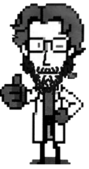
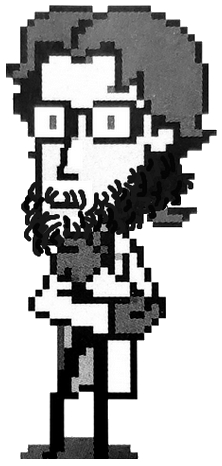

Plano de atividade acadêmica · 3.ª série · 60h
Um semestre para perguntar quem arranja as contingências dentro das instituições — e o que a Análise do Comportamento pode fazer a respeito.
§ 0 — Instruções de uso
Tudo o que você precisa para acompanhar 6PAC099 está aqui: o programa completo, o cronograma das duas turmas, o manual interativo de OBM e BSA, o glossário de conceitos, a bibliografia com links e o acervo de tudo o que turmas anteriores já produziram. Escolha sua turma no topo da página — todas as datas do site passam a mostrar os seus encontros.

Sua caderneta de VLs, os capítulos que você marcou como lidos, os quizzes respondidos e os carimbos conquistados ficam gravados apenas neste navegador, neste computador. Nada é enviado a ninguém e o docente não vê esses dados — o registro que vale para a nota é sempre a entrega no Google Classroom. Se limpar os dados do navegador ou trocar de máquina, o percurso recomeça do zero.
§ 0.1 — Percurso de exploração
Explorar o material rende carimbos. Eles não valem nota — são só um mapa do quanto você já percorreu. As conquistas que valem na Avaliação 1 estão na seção da Árvore de Leituras.
§ 1 — Programa oficial
A ementa original foi mantida integralmente. As demais seções foram reorganizadas para o 2.º semestre de 2026, com mais aulas teóricas, menos campo e uma Avaliação 1 apoiada em verificações de leitura semanais. Clique em cada peça para abrir.
§ 2 — Cronograma detalhado
Uma VL é produzida a cada aula. Nas semanas de congresso, recesso ou viagem, a VL funciona também como atividade orientada de integralização da carga horária. As datas mostradas seguem a turma selecionada no topo.
§ 3 — Avaliação 1 · Diário de Bordo
Cada VL é uma pequena unidade de leitura, escrita e pensamento que pode ser retomada nas semanas seguintes. Ao final, as VLs formam um diário de bordo pessoal. Use a caderneta abaixo para marcar o que já entregou e quais conquistas cada VL rendeu — a árvore ao lado cresce com o seu registro. Raízes são as fontes originais que você foi buscar; galhos, os conceitos comportamentais que usou; folhas, os exemplos aplicados; frutos, as conclusões próprias.
Uma árvore vazia não é uma árvore ruim — é uma árvore em agosto.
§ 4 — Material didático · Handbook of Organizational Performance
Roteiros de estudo dos 17 capítulos do Handbook of Organizational Performance: Behavior Analysis and Management (Johnson, Redmon & Mawhinney, orgs., 2001) — o manual de referência do campo. Cada capítulo traz síntese em português, conceitos-chave, perguntas-guia, a ponte com as aulas da disciplina e um quiz. São roteiros de leitura, não substitutos do texto original: use-os para entrar no capítulo e para checar se entendeu depois.
§ 5 — Verbetes
Os conceitos que atravessam as três unidades, do pinpoint ao capital-nuvem. Clique para abrir a definição e ver onde cada um aparece no semestre.
§ 6 — Acervo histórico
Todo ano, a Avaliação 3 propôs uma intervenção em alguma instituição real ou semirreal. Esta seção guarda os temas, as instituições e os nomes de quem os propôs, turma por turma, para que a disciplina possa olhar para o próprio histórico: que instituições os estudantes de Psicologia da UEL escolhem analisar, e o que muda ao longo dos anos. O acervo cresce a cada semestre e nada é apagado.
§ 7 — Mural
O registro visual de quem passou por 6PAC099. Uma foto para a T1000 e uma para a T2000, a cada ano. Toque para ampliar.
§ 8 — Fontes
Referências em APA 7.ª edição. Use o botão copiar para levar a referência formatada direto para o seu trabalho — e confira sempre antes de enviar.
§ 9 — Autoria e manutenção
A disciplina 6PAC099 é oferecida pelo Departamento de Psicologia Geral e Análise do Comportamento da UEL. Este site é mantido pelo CRIACOM — Criatividade & Comportamento.
Docente responsável · PPGAC-UEL · CRIACOM
Pesquisador em análise do comportamento, criatividade, resolução de problemas e design de jogos comportamentais. Coordena o CRIACOM e responde pela 6PAC099.
Grupo de Pesquisa · Criatividade & Comportamento
Grupo de pesquisa da UEL codirigido por Hernando Borges Neves Filho e Yulla Christoffersen Knaus. Investiga criatividade, recombinação de repertórios, cultura digital e ensino de análise do comportamento.